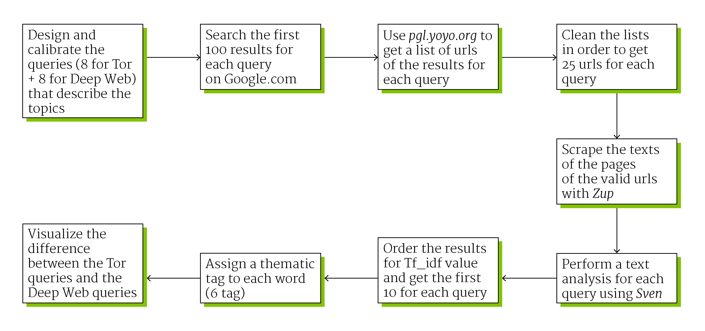

First step
We designed and calibrated the queries in order to extrapolate the most related terms to the topic. The two main words or keywords that describe the theme are "Deep Web" and "Tor", the cyber environment and the tool for surfing it. We added to each of these two words eight words connected with the controversy. At the end we had sixteen queries: Deep Web technology, Deep Web legal, Deep Web risk, Deep Web freedom, Deep Web crime, Deep Web anonimity, Deep Web censorship, Deep Web security, Tor technology, Tor legal, Tor risk, Tor freedom, Tor crime, Tor anonimity, Tor censorship and Tor security.
This queries were used for searching materials on Google.com, to get the first 100 link for each query. We cleaned the list and get 25 urls for each query. The text from each query's corpus was scraped and analyzed with dev.sven.densitydesign.org for obtaining a list of words sorted by Tf_idf value (term frequency–inverse document frequency). We added a category (perceptions, items, verbs, actors involved, technology and ambients) to the first 10 words for query, to see differences and similarities among the results.
